Invention: Ultra-Thin Ultra broad-band Metamaterial Microwave Absorber Based on Novel Non-Linearity in Unit Cell Design for X-band Applications.
The Patent Office Journal No. : 37/2021
Dated 10/09/2021.
Application No. 202011009840 A
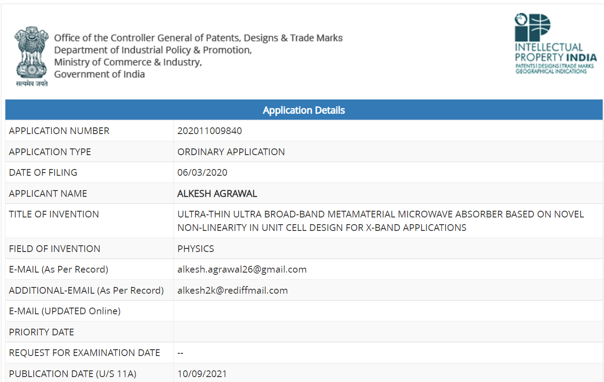
Invention: De-Centralized Solar Charge cum Docking Station for 48Vdc Electric Vehicles.
The Patent Office Journal No. : 25/2020
Dated 19/06/2020.
Application No. 201911044345 A
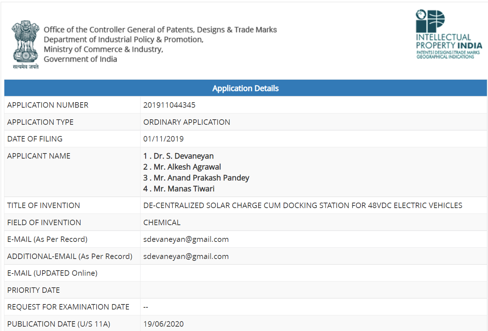
Invention: Dual power mode sensor based automated low cost SMART Bin under Swachh Bharat Abhiyan.
The Patent Office Journal No. 12/2024 Dated 22/03/2024
Patent Application No. 202211052875 A
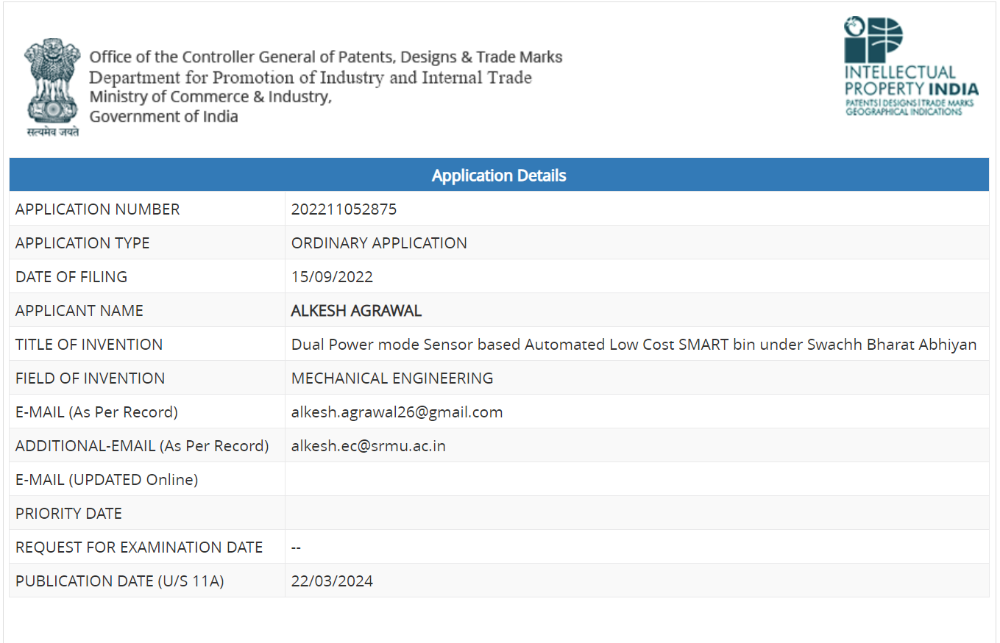
Invention: Automated engine seize system using over consumed alcohol sensors to prevent road accidents.
The Patent Office Journal No. 15/2024 Dated 12/04/2024
Patent Application No. 202211058007 A
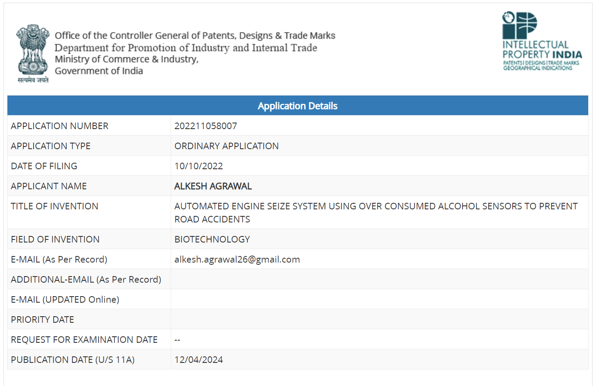
Invention: Robotic Wheel Chair for Physically disabled.
The Patent Office Journal No. 34/2024 Dated 23/08/2024
Patent Application No. 202311011812 A
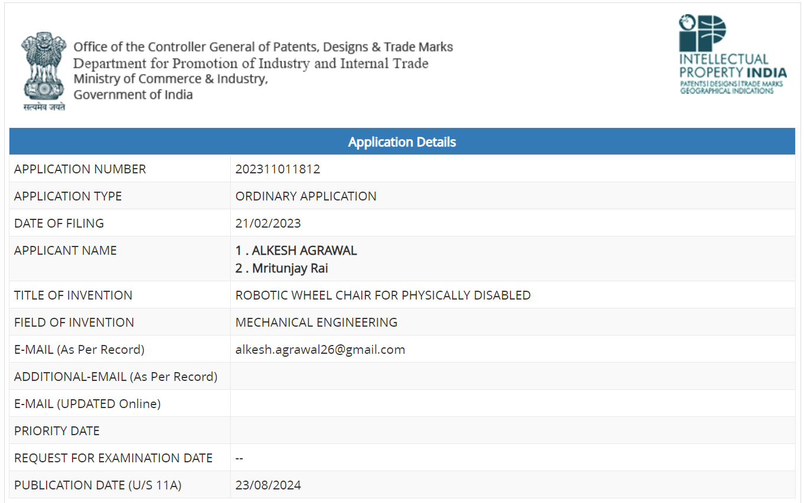
Invention: Microstrip Patch Antenna with Metamaterial Unit Cells Loaded Radiating Patches and Ground Structure for ITS Applications.
The Patent Office Journal No. 14/2025 Dated 04/04/2025
Patent Application No. 202511024894 A
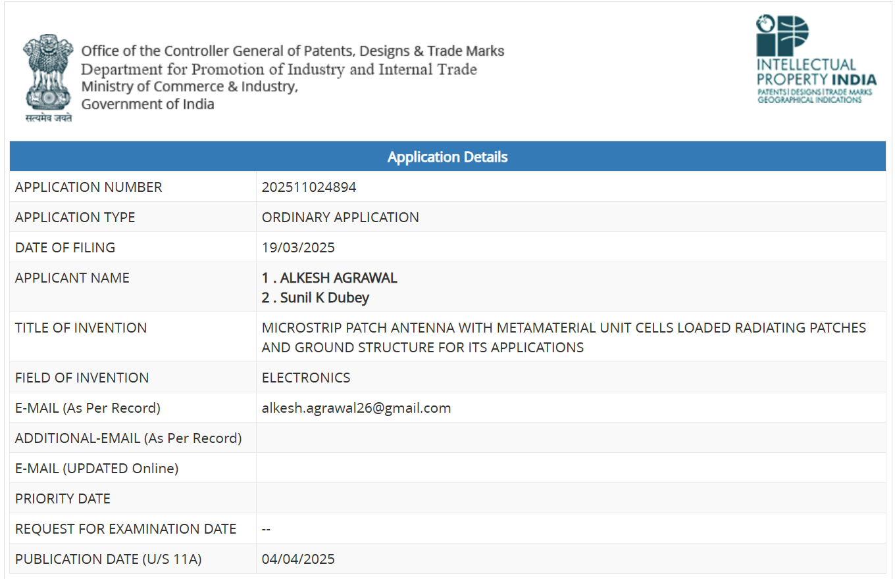
Invention: AI-Driven UAV Seeding System for Enhanced Atmospheric Visibility.
UK Patent Design No. 6422703
Invention: Hybrid UAV with AI-Based Flight optimization of Fog clearance.
UK Patent Design No. 6422704
Invention: UV Ray Generator-Integrator UAV for Fog Dispersal.
UK Patent Design No. 6422705
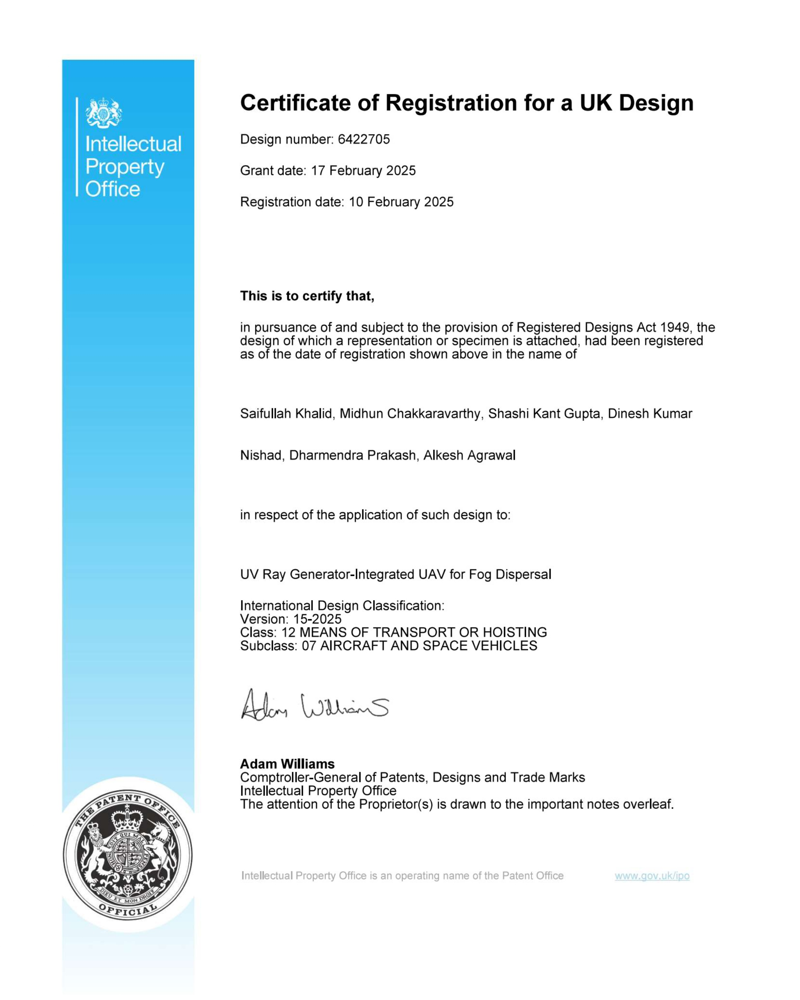
Invention: Portable UAV-Mounted UV Ray Generator for Atmospheric Modifications.
UK Patent Design No. 6422706
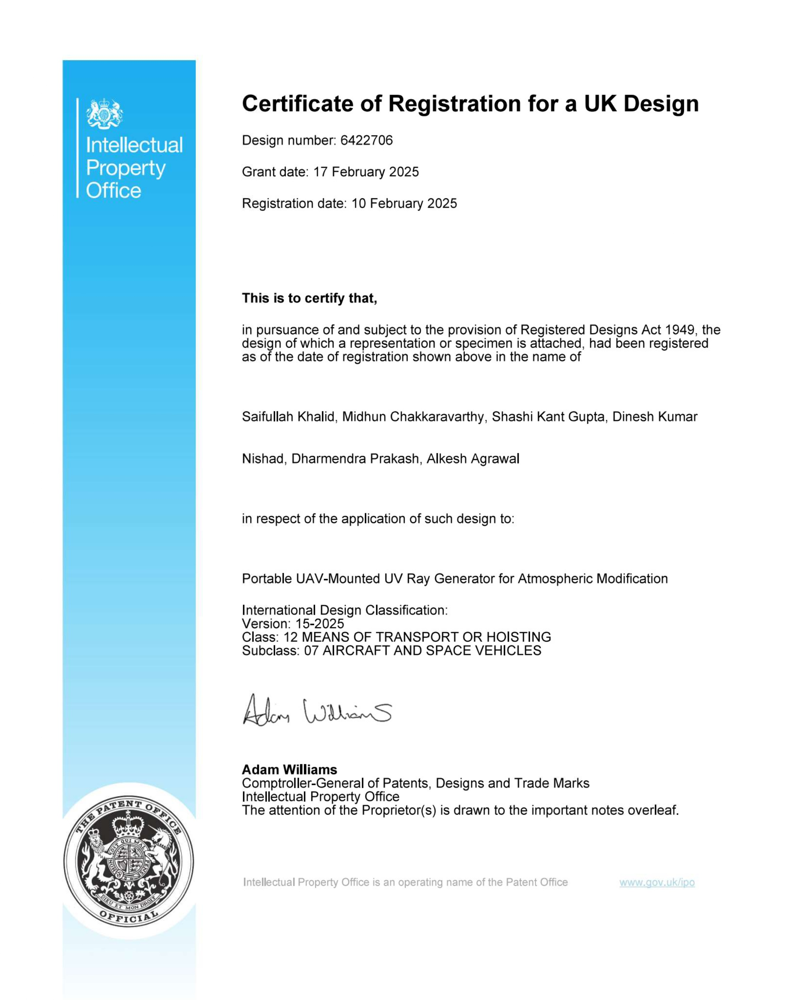
Invention: High Precision UV Ray Emission Apparatus for Drones.
UK Patent Design No. 6422707
Invention: AI-Controlled UV Ray Distribution Apparatus for UAVs.
UK Patent Design No. 6422708
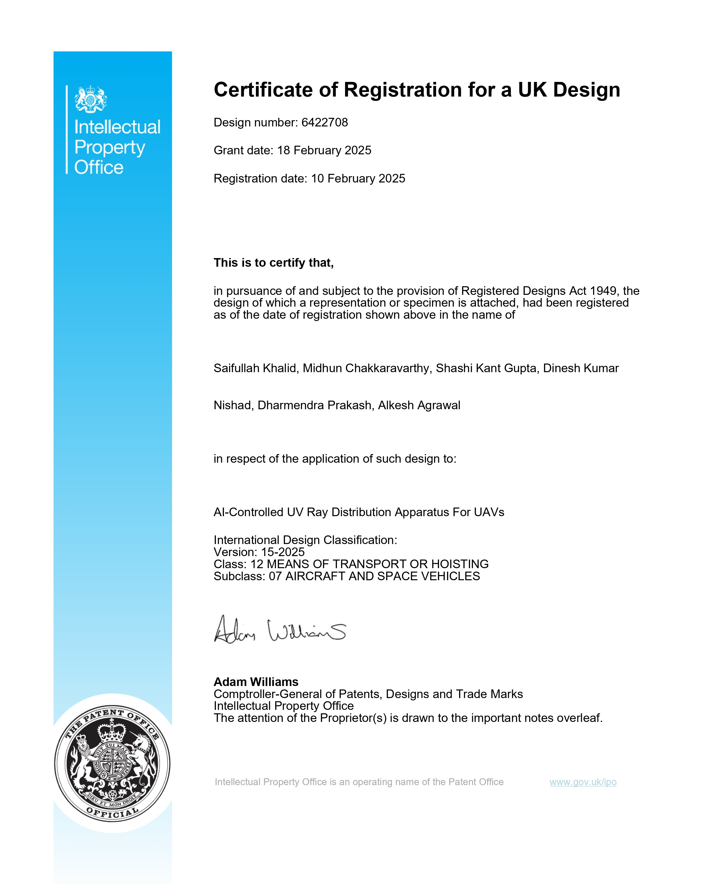
Invention: Autonomous Fog Identification and Tracking Apparatus for UAVs.
UK Patent Design No. 6422709
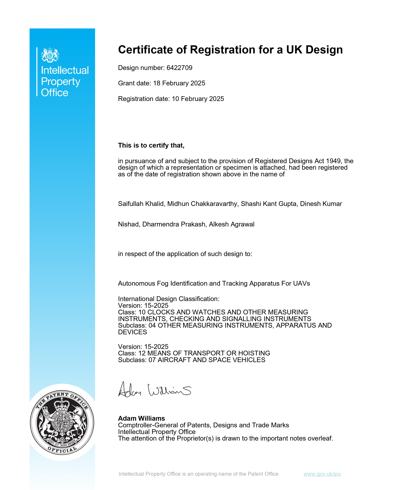
Invention: Multi-Spectral Imaging Device for Real-Time Fog Detection and Mapping.
UK Patent Design No. 6422710
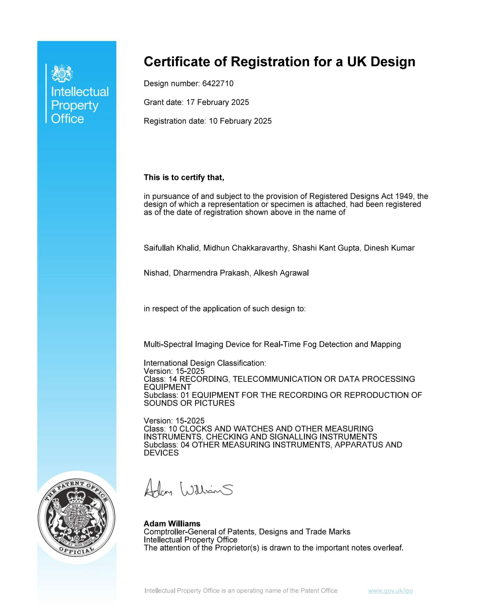
Invention: Multi-Purpose UAV for Meteorological Data Collection & Dispersal Operations.
UK Patent Design No. 6422711
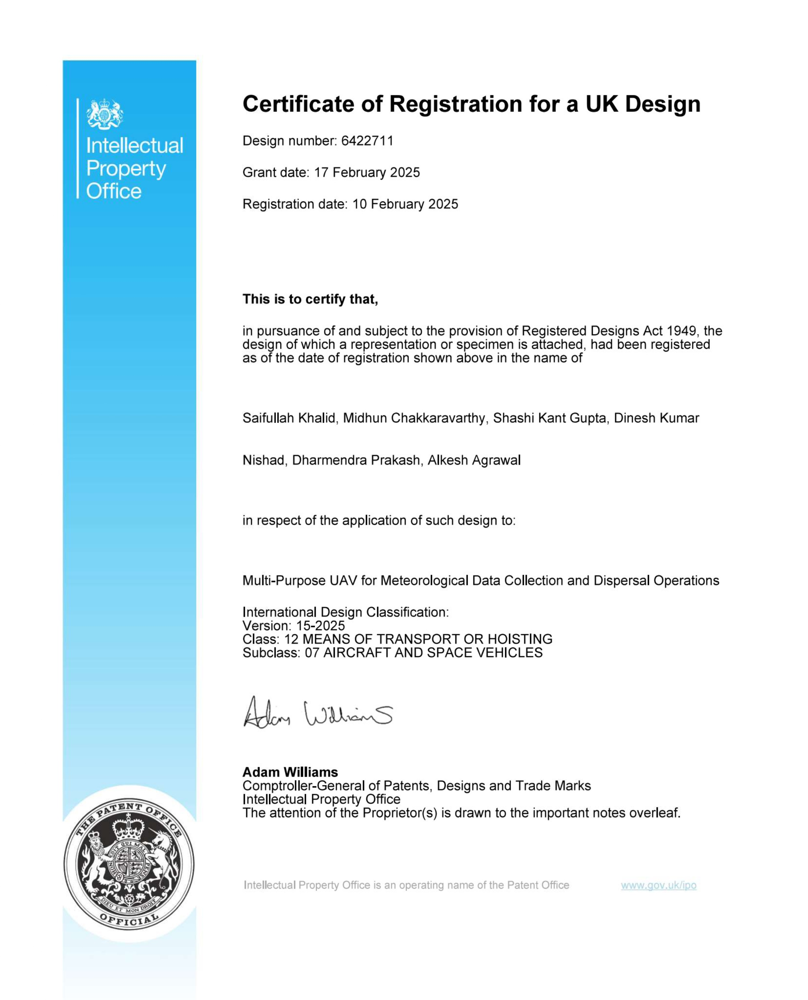
Invention: AI-Enabled UAV for Automated Fog Dispersal & Visibility Enhancement.
UK Patent Design No. 6422712